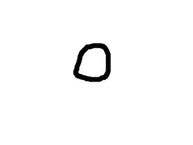
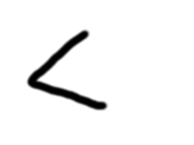
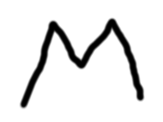
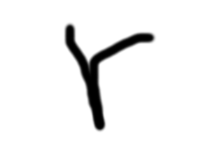
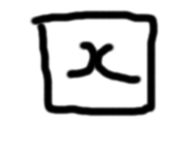
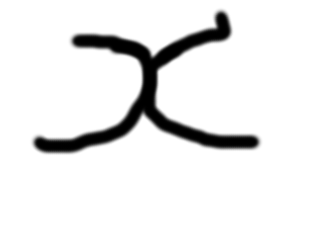

MathBox - Help
Features
-
This prototype supports numbers 0-9, basic arithmetic operations such as "+","-,"*","/". To insert a decimal point use the decimal point gesture as shown below.

-
This prototype uses a single character input. Multi stroke input is not supported currently.
-
The expression evaluated will persist on screen so that it can be used in the next expression.
-
The answers to the evaluated expression can be saved and retrieved for later use
Gestures
-
Backspace: To use backspace draw the backspace arrow as shown below, alternatively you can you use the button for deletion provided on screen.

-
Evaluate:Expressions are evaluated using the check mark. After entering the expression draw a check mark to evaluate, alternatively use the button on screen.
-
Shake to clear:Expression can be cleared by shaking the screen as shown below.
-
Store:An evaluated answer can be stored in memory using the expression shown below.

-
Retrieve:A stored answer can be retrieved from memory using the expression shown below.

-
Variables:An evaluated answer can be stored and retrieved in two separate variables using the expression shown below.

